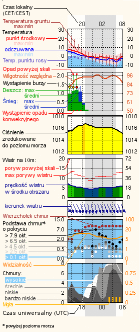

Info
Schowaj legendę
🔍 Dodaj Miejsce

X
Szukaj
Witaj w kliencie starszej wersji ICM Meteo!
Aby usunąć miejscowość: naciśnij na nią prawym przyciskiem myszy(PC), albo przytrzymaj (Android).
Kliknij dwukrotnie na meteogram, aby go rozciągnąć.